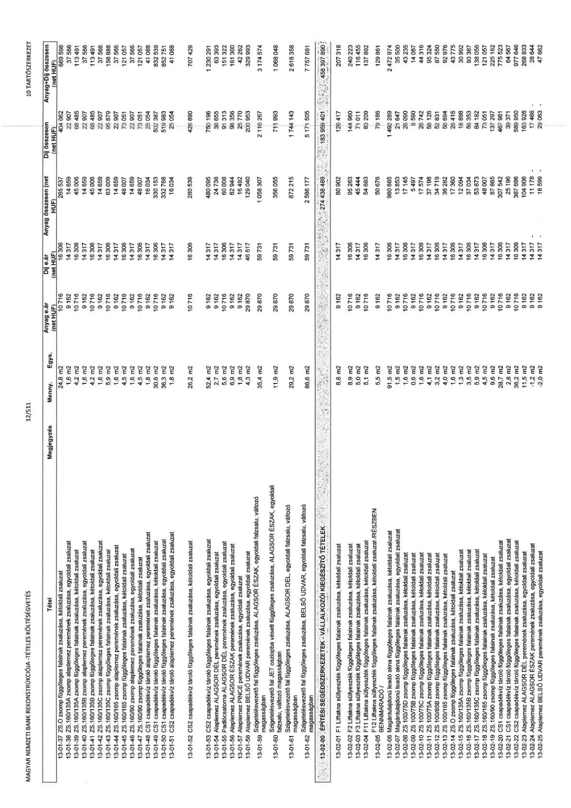

| Tétel | Megjegyzés | Menny. | Egys. | Anyag e.ár (net HUF) | Díj e.ár (net HUF) | Anyag összesen (net HUF) | Díj összesen (net HUF) | Anyag+Díj összesen (net HUF) |
|---|---|---|---|---|---|---|---|---|
| 13-01-F1 Liftakna süllyeszték alaplemez peremének zsaluzása, egyoldali zsaluzat | NaN | 3,7 | m2 | 9 162 | 14 317 | 33 900 | 52 972 | 86 872 |
| 13-01-02 F1 Liftakna süllyeszték függőleges falainak zsaluzása, kétoldali zsaluzat | NaN | 9,8 | m2 | 10 716 | 16 306 | 104 693 | 159 309 | 264 002 |
| 13-01-03 F2 Liftakna süllyeszték alaplemez peremének zsaluzása, egyoldali zsaluzat | NaN | 1,3 | m2 | 9 162 | 14 317 | 11 533 | 18 022 | 29 555 |
| 13-01-04 F2 Liftakna süllyeszték függőleges falainak zsaluzása, kétoldali zsaluzat | NaN | 9,7 | m2 | 10 716 | 16 306 | 104 150 | 158 521 | 262 671 |
| 13-01-05 F3 Liftakna süllyeszték alaplemez peremének zsaluzása, egyoldali zsaluzat | NaN | 1,3 | m2 | 9 162 | 14 317 | 12 094 | 18 898 | 30 992 |
| 13-01-06 F3 Liftakna süllyeszték függőleges falainak zsaluzása, kétoldali zsaluzat | NaN | 5,0 | m2 | 10 716 | 16 306 | 54 007 | 82 182 | 136 189 |
| 13-01-07 F3 Liftakna süllyeszték függőleges falainak zsaluzása, egyoldali zsaluzat | NaN | 4,1 | m2 | 9 162 | 14 317 | 37 381 | 58 412 | 95 794 |
| 13-01-08 F4 Liftakna süllyeszték alaplemez peremének zsaluzása, egyoldali zsaluzat | NaN | 0,0 | m2 | 9 162 | 14 317 | 0 | 0 | 0 |
| 13-01-09 F4 Liftakna süllyeszték függőleges falainak zsaluzása, kétoldali zsaluzat | NaN | 4,0 | m2 | 10 716 | 16 306 | 36 282 | 56 694 | 92 976 |
| 13-01-10 F5 Liftakna süllyeszték alaplemez peremének zsaluzása, egyoldali zsaluzat | NaN | 1,5 | m2 | 9 162 | 14 317 | 15 859 | 24 133 | 39 992 |
| 13-01-11 F5 Liftakna süllyeszték függőleges falainak zsaluzása, kétoldali zsaluzat | NaN | 11,4 | m2 | 10 716 | 16 306 | 103 990 | 162 495 | 266 485 |
| 13-01-12 F10 Liftakna süllyeszték alaplemez peremének zsaluzása, egyoldali zsaluzat | NaN | 0,0 | m2 | 9 162 | 14 317 | 0 | 0 | 0 |
| 13-01-13 F10 Liftakna süllyeszték függőleges falainak zsaluzása, kétoldali zsaluzat | NaN | 0,0 | m2 | 10 716 | 16 306 | 0 | 0 | 0 |
| 13-01-14 F11 Liftakna süllyeszték alaplemez peremének zsaluzása, egyoldali zsaluzat | NaN | 0,8 | m2 | 9 162 | 14 317 | 8 573 | 13 045 | 21 617 |
| 13-01-15 F11 Liftakna süllyeszték függőleges falainak zsaluzása, kétoldali zsaluzat | NaN | 5,1 | m2 | 10 716 | 16 306 | 46 727 | 73 015 | 119 742 |
| 13-01-16 F11 Liftakna süllyeszték függőleges falainak zsaluzása, egyoldali zsaluzat | NaN | 4,0 | m2 | 9 162 | 14 317 | 42 756 | 65 061 | 107 817 |
| 13-01-17 F12 Liftakna süllyeszték alaplemez peremének zsaluzása, egyoldali zsaluzat | NaN | 0,7 | m2 | 9 162 | 14 317 | 6 688 | 10 451 | 17 140 |
| 13-01-18 F12 Liftakna süllyeszték függőleges falainak zsaluzása, kétoldali zsaluzat /RÉSZBEN FENNMARADÓ/ | NaN | 5,5 | m2 | 10 716 | 16 306 | 59 258 | 90 172 | 149 430 |
| 13-01-19 F12 Liftakna süllyeszték függőleges falainak zsaluzása, egyoldali zsaluzat | NaN | 1,6 | m2 | 9 162 | 14 317 | 16 824 | 25 600 | 42 424 |
| 13-01-20 Magántulajdonú leadó akna függőleges falainak zsaluzása, kétoldali zsaluzat | NaN | 26,0 | m2 | 10 716 | 16 306 | 256 858 | 400 897 | 657 454 |
| 13-01-21 Magántulajdonú leadó akna függőleges falainak zsaluzása, egyoldali zsaluzat | NaN | 0,9 | m2 | 9 162 | 14 317 | 9 451 | 14 382 | 23 833 |
| 13-01-22 ZS 100/75D zsomp alaplemez peremének zsaluzása, egyoldali zsaluzat | NaN | 1,0 | m2 | 9 162 | 14 317 | 9 162 | 14 317 | 23 479 |
| 13-01-23 ZS 100/75D zsomp függőleges falainak zsaluzása, kétoldali zsaluzat | NaN | 1,6 | m2 | 10 716 | 16 306 | 17 145 | 26 090 | 43 235 |
| 13-01-24 ZS 100/75B zsomp alaplemez peremének zsaluzása, egyoldali zsaluzat | NaN | 1,0 | m2 | 9 162 | 14 317 | 9 162 | 14 317 | 23 479 |
| 13-01-25 ZS 100/75B zsomp függőleges falainak zsaluzása, kétoldali zsaluzat | NaN | 1,6 | m2 | 10 716 | 16 306 | 17 145 | 26 090 | 43 235 |
| 13-01-26 ZS 100/75C zsomp alaplemez peremének zsaluzása, egyoldali zsaluzat | NaN | 2,0 | m2 | 9 162 | 14 317 | 18 324 | 28 633 | 46 958 |
| 13-01-27 ZS 100/75C zsomp függőleges falainak zsaluzása, kétoldali zsaluzat | NaN | 3,2 | m2 | 10 716 | 16 306 | 34 290 | 52 179 | 86 470 |
| 13-01-28 ZS 100/75A zsomp alaplemez peremének zsaluzása, egyoldali zsaluzat | NaN | 2,0 | m2 | 9 162 | 14 317 | 18 324 | 28 633 | 46 958 |
| 13-01-29 ZS 100/75A zsomp függőleges falainak zsaluzása, kétoldali zsaluzat | NaN | 3,2 | m2 | 10 716 | 16 306 | 34 290 | 52 179 | 86 470 |
| 13-01-30 ZS 100/85A zsomp alaplemez peremének zsaluzása, egyoldali zsaluzat | NaN | 2,0 | m2 | 9 162 | 14 317 | 18 324 | 28 633 | 46 958 |
| 13-01-31 ZS 100/85A zsomp függőleges falainak zsaluzása, kétoldali zsaluzat | NaN | 3,8 | m2 | 10 716 | 16 306 | 41 249 | 62 815 | 104 063 |
| 13-01-32 ZS 100/85B zsomp alaplemez peremének zsaluzása, egyoldali zsaluzat | NaN | 1,4 | m2 | 9 162 | 14 317 | 12 827 | 20 043 | 32 870 |
| 13-01-33 ZS 100/85B zsomp függőleges falainak zsaluzása, kétoldali zsaluzat | NaN | 1,6 | m2 | 10 716 | 16 306 | 17 145 | 26 090 | 43 235 |
| 13-01-34 ZS 100/165 zsomp alaplemez peremének zsaluzása, egyoldali zsaluzat | NaN | 0,0 | m2 | 9 162 | 14 317 | 0 | 0 | 0 |
| 13-01-35 ZS 100/165 zsomp függőleges falainak zsaluzása, kétoldali zsaluzat | NaN | 10,6 | m2 | 10 716 | 16 306 | 113 158 | 172 191 | 285 349 |
| 13-01-36 ZS.O zsomp alaplemez peremének zsaluzása, egyoldali zsaluzat | NaN | 3,2 | m2 | 9 162 | 14 317 | 28 861 | 45 098 | 73 958 |
| 13-01-37 ZS.O zsomp függőleges falainak zsaluzása, kétoldali zsaluzat | NaN | 24,8 | m2 | 10 716 | 16 306 | 265 637 | 404 227 | 669 864 |
| 13-01-38 ZS.160/135A zsomp alaplemez peremének zsaluzása, egyoldali zsaluzat | NaN | 4,2 | m2 | 9 162 | 14 317 | 38 481 | 60 131 | 98 612 |
| 13-01-39 ZS.160/135A zsomp függőleges falainak zsaluzása, kétoldali zsaluzat | NaN | 4,2 | m2 | 10 716 | 16 306 | 45 006 | 68 485 | 113 491 |
| 13-01-40 ZS.160/135B zsomp alaplemez peremének zsaluzása, egyoldali zsaluzat | NaN | 1,6 | m2 | 9 162 | 14 317 | 14 659 | 22 907 | 37 566 |
| 13-01-41 ZS.160/135B zsomp függőleges falainak zsaluzása, kétoldali zsaluzat | NaN | 4,2 | m2 | 10 716 | 16 306 | 45 006 | 68 485 | 113 491 |
| 13-01-42 ZS.160/135C zsomp alaplemez peremének zsaluzása, egyoldali zsaluzat | NaN | 1,6 | m2 | 9 162 | 14 317 | 14 659 | 22 907 | 37 566 |
| 13-01-43 ZS.160/135C zsomp függőleges falainak zsaluzása, kétoldali zsaluzat | NaN | 5,9 | m2 | 10 716 | 16 306 | 63 009 | 95 879 | 158 888 |
| 13-01-44 ZS.160/165 zsomp alaplemez peremének zsaluzása, egyoldali zsaluzat | NaN | 1,6 | m2 | 9 162 | 14 317 | 14 659 | 22 907 | 37 566 |
| 13-01-45 ZS.160/165 zsomp függőleges falainak zsaluzása, kétoldali zsaluzat | NaN | 4,5 | m2 | 10 716 | 16 306 | 48 007 | 73 051 | 121 057 |
| 13-01-46 ZS.160/90 zsomp alaplemez peremének zsaluzása, egyoldali zsaluzat | NaN | 1,6 | m2 | 9 162 | 14 317 | 14 659 | 22 907 | 37 566 |
| 13-01-47 ZS.160/90 zsomp függőleges falainak zsaluzása, kétoldali zsaluzat | NaN | 4,5 | m2 | 10 716 | 16 306 | 48 007 | 73 051 | 121 057 |
| 13-01-48 CS1 csapadékvíz tároló alaplemez peremének zsaluzása, egyoldali zsaluzat | NaN | 1,8 | m2 | 9 162 | 14 317 | 16 034 | 25 054 | 41 088 |
| 13-01-49 CS1 csapadékvíz tároló függőleges falainak zsaluzása, kétoldali zsaluzat | NaN | 30,8 | m2 | 10 716 | 16 306 | 330 153 | 502 387 | 832 539 |
| 13-01-50 CS1 csapadékvíz tároló függőleges falainak zsaluzása, egyoldali zsaluzat | NaN | 36,3 | m2 | 9 162 | 14 317 | 332 768 | 519 983 | 852 751 |
| 13-01-51 CS2 csapadékvíz tároló alaplemez peremének zsaluzása, egyoldali zsaluzat | NaN | 1,8 | m2 | 9 162 | 14 317 | 16 034 | 25 054 | 41 088 |
| 13-01-52 CS2 csapadékvíz tároló függőleges falainak zsaluzása, kétoldali zsaluzat | NaN | 26,2 | m2 | 10 716 | 16 306 | 280 539 | 426 890 | 707 429 |
| 13-01-53 CS2 csapadékvíz tároló függőleges falainak zsaluzása, egyoldali zsaluzat | NaN | 52,4 | m2 | 9 162 | 14 317 | 480 095 | 750 196 | 1 230 291 |
